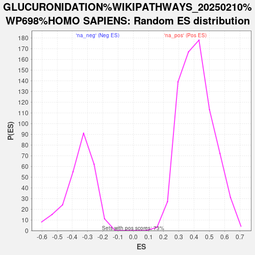

| | | Dataset | CD_deg |
| Phenotype | NoPhenotypeAvailable |
| Upregulated in class | na_neg |
| GeneSet | GLUCURONIDATION%WIKIPATHWAYS_20250210%WP698%HOMO SAPIENS |
| Enrichment Score (ES) | -0.75520587 |
| Normalized Enrichment Score (NES) | -2.1555338 |
| Nominal p-value | 0.0 |
| FDR q-value | 0.00496392 |
| FWER p-Value | 0.051 |
Table: GSEA Results Summary
 Fig 1: Enrichment plot: GLUCURONIDATION%WIKIPATHWAYS_20250210%WP698%HOMO SAPIENS
Fig 1: Enrichment plot: GLUCURONIDATION%WIKIPATHWAYS_20250210%WP698%HOMO SAPIENS
Profile of the Running ES Score & Positions of GeneSet Members on the Rank Ordered List

Fig 2: GLUCURONIDATION%WIKIPATHWAYS_20250210%WP698%HOMO SAPIENS: Random ES distribution
Gene set null distribution of ES for GLUCURONIDATION%WIKIPATHWAYS_20250210%WP698%HOMO SAPIENS